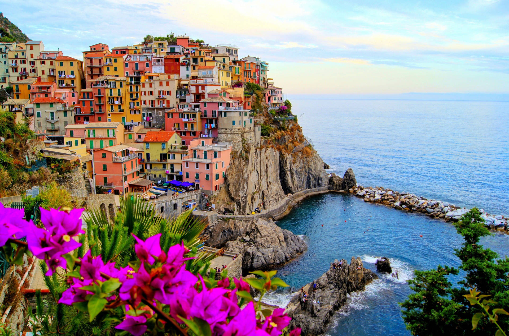

DISCOVER

Dobrý deň!
Slovakia
Home to the beautiful Tatra Mountains, with stunning hiking trails, waterfalls, and traditional villages. The country also boasts a diverse range of forests, rivers, and lakes.
Castle
Rent
Countryside
Tour

Ciao, come stai?
Italy
Italian cuisine is renowned for its rich flavors, aromas, and bold ingredients. Indulge in pizza, pasta, gelato, and espresso, and sample some of the world's best wines, such as Chianti and Prosecco.
Restaurant
Discount
Museums
Tour

Halló, bless!
Iceland
One of the best places on Earth to witness the breathtaking spectacle of the Northern Lights (Aurora Borealis). Experience the quirky and charming Icelandic culture, which is steeped in Viking history and folklore.
Hike
3 places
Climbing
Indoor